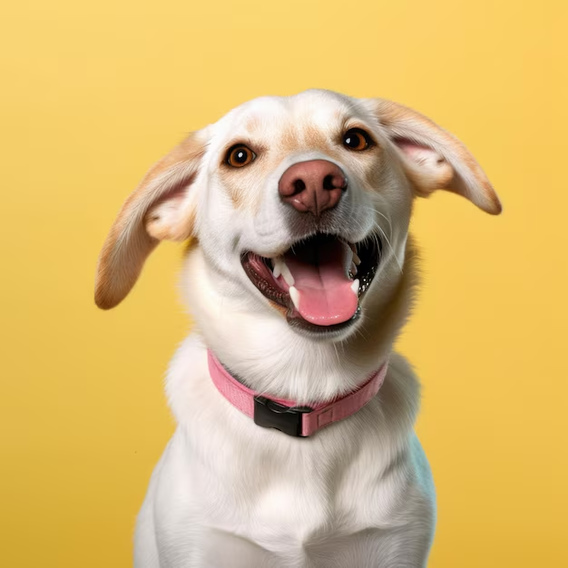
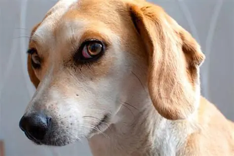
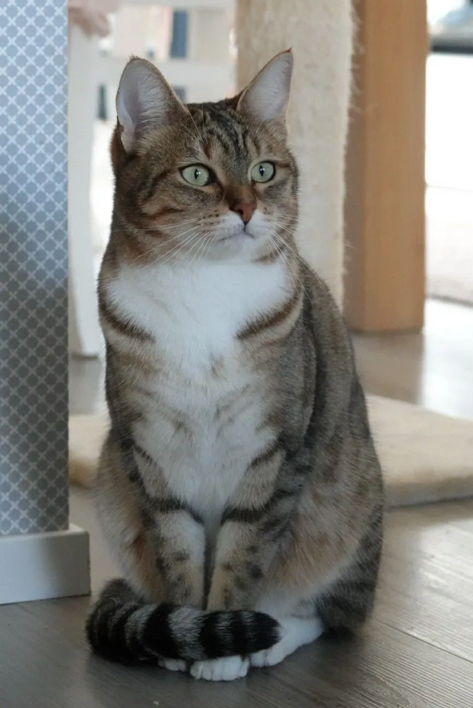
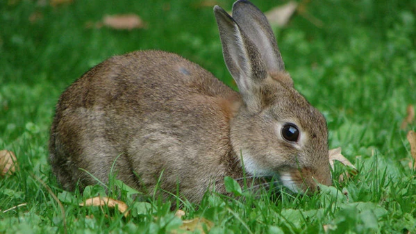

Bienvenidos al mundo de las mascotas
Aquí encontrarás información sobre adopciones, cuidados y servicios para tus mejores amigos.
Adopciones

Conoce a Max, un perrito juguetón que busca un hogar.

Luna es una gatita cariñosa esperando a su familia ideal.

Rocky, un conejo curioso que alegrará tu vida.
Nuestros Servicios
- Veterinaria
- Guardería
- Entrenamiento
- Accesorios
¿Por qué adoptar?
- Salvas una vida y das amor a quien más lo necesita.
- Contribuyes a reducir el abandono animal.
- Recibes compañía y alegría en tu hogar.
Testimonios
"Adoptar a Luna fue la mejor decisión, ahora mi familia está más feliz que nunca."
- Marta G."Max llegó a nuestro hogar y nos enseñó el verdadero significado de la amistad."
- Carlos R.